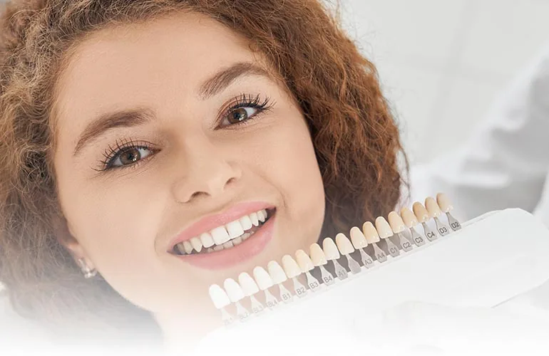
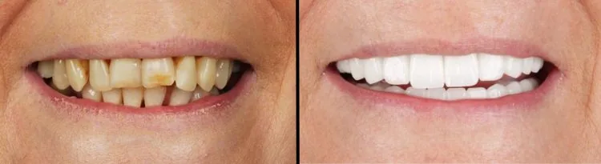

Zirconium Crowns in Antalya, Turkey: Strength and Aesthetics
Zirconium crowns Antalya are gaining traction in dental restoration for their blend of durability and aesthetic appeal.
Zirconium crowns, also known as zirconia crowns, have emerged as a modern alternative to traditional dental crowns. These crowns, which contain the element zirconium oxide, are extremely durable and biocompatible. It is a method frequently preferred by individuals looking for a long-lasting, natural-looking solution to have white teeth and an aesthetic smile.
Technological developments in the field of dentistry constantly raise the level of oral health and aesthetic beauty. Among these developments, Zirconium crowns are a treatment method that perfectly blends durability and aesthetics.
In this article, we have given detailed information about frequently asked questions such as how zirconium crowns are made, how long their lifespan is and to whom they can be applied.
Development of zirconium crowns
When dental crowns are needed, it is important that the materials used are biocompatible. Until the 1980s, it was common to place plastic biodent materials on metal, then porcelain on metal began to be preferred.
Especially in the last 30 years, porcelain dental veneers with metal substructure have become popular.
However, the metal used in the substructure of porcelain veneers may cause allergic reactions in some individuals and may cause aesthetic problems such as gingival bruising.
For this reason, full ceramic reinforced porcelains were focused on in the 1990s. However, even if porcelain materials are reinforced with ceramic, it is difficult to achieve successful results without the use of only ceramic substructure material, especially in applications such as dental bridges.
At this point, zirconium substructures began to replace metal substructures as a solution. Zirconium is almost as durable as metal and it is easy to create a more aesthetic substructure.
What Are Zirconium Crowns?
The teeth coated with porcelain on zirconium substructure are called "zirconium veneers". These crowns provide durable and aesthetic results without the use of metal, unlike traditional metal-supported porcelain crowns.
Zirconium crowns are a form of restoration that completely covers a tooth or dental implant. They can be used to increase the strength or improve the physical appearance of teeth.
What Are the Benefits of Zirconia Crowns?

Zirconium crowns are a frequently preferred application to correct problematic teeth and gain a functional and aesthetic appearance. Since it has high light transmittance, it gives a natural appearance to the teeth.
Zirconium crowns help you achieve an aesthetic smile by adding natural whiteness to your teeth. Although they do not contain metal, zirconium crowns have high durability and are long-lasting.
While there is a purplish color change in the gums in metal dental crown types, there is no color change in Zirconium crowns.
Zirconium oxide crown; It is done by placing the crown on the surface of the tooth in the form of a crown. It eliminates visual defects in a person's teeth.
It gives the aesthetic result closest to the natural appearance of the tooth.
These crowns are generally a safe treatment that individuals apply for tooth sensitivity, caries or aesthetic concerns.
Zirconium Crown Procedure in Antalya, Turkey: Step by Step
Zirconium crown application consists of the following Steps:
Step 1
The patient is examined by the dentist, and local anesthesia is applied to prevent the patient from feeling any pain.
Step 2
The color of the tooth is decided with the patient. The teeth to be crowned are reduced slightly and measurements are made using computer-aided design and manufacturing (CAD-CAM) technology.
Zirconia crowns can be produced and placed in a short time with simple restorations using CAD-CAM equipment. After the measurement, temporary teeth are bonded until the Zirconium crowns are ready.
Step 3
Teeth are prepared in an average of 1 to 5 days. Temporary teeth are removed and then permanent Zirconium crowns are bonded to the teeth.
Thus, the treatment is completed.
In order for the zirconium crowns to last long after the treatment, it is very important for our patients to maintain oral hygiene and follow their annual dentist appointments. With check-ups and dental care, zirconium crowns can be used for many years without any problems.
How much does a zirconia crown cost in Turkey?
Zirconium crowns Turkey prices vary depending on various factors such as the structure of the teeth to be crowned, the materials used, and the number of teeth. Because the suitability of the tooth structure for treatment is the most important factor that will ensure the treatment. Zirconium crown Turkey prices vary between $250-$450 for a single zirconium crown. This price is in the range of £900-£1300 in the UK.
Gum diseases or tooth decay require intervention before treatment. These treatments also cost extra.
Variations in exchange rates and importation of materials will also affect prices.
The cost of these crowns also varies depending on the brand of materials used.
Zirconium dental crown prices also vary depending on the installment or cash payment method.
Zirconium crown prices vary depending on the above variables. You can contact our clinic for detailed information. Our dentists will give you a clear price after deciding on your specific treatment.
Who are zirconium crowns suitable for?
Zirconium crowns are preferred for the following reasons:
- Prevention of fracture and loss of weak and cracked teeth
- Preventing the opening of the moving spaces between the teeth
- Hollywood Smile design
- Improvement and correction of chewing
- Covering large fillings, dental implants and teeth weakened after root canal treatment
- Having tooth decay or having a more aesthetic white smile
- Individuals with metal allergy
How is a zirconium crown made in Turkey?
First of all, the patient is examined. Teeth and gums are examined. The presence of conditions that require preliminary treatment (such as caries or gum treatments) is detected. Pretreatment is applied if necessary.
Local anesthesia is applied to the area to be applied. There is generally no pain or ache during the zirconia dental crown process. However, patients with a very low pain threshold may also experience pain, so the area to be treated is anesthetized.
In order to adjust the size of the teeth to be veneered and to ensure that the crown adheres better, the surface of the tooth tissue is slightly abraded and the tooth is thinned.
Measurements of the tooth are taken and sent to the laboratory for crown preparation.
The teeth are imaged, the color of the zirconium is determined and measurements are taken. After the smile test is performed, all records are examined. Temporary veneers are fitted to the patient while technicians prepare the crown.
Crowns are completed in 1 to 5 days.
Temporary crowns are used until permanent crowns arrive from the laboratory.
It is tested by wearing a zirconium crown. After the patient's approval is obtained, a permanent dental crown is placed. (The bonding process of the veneers is not completed if necessary, and the patient uses and tests the crowns for 1-5 days. After the patient's approval is obtained, it can be permanently adhered.)
The dentist's recommendations are taken.
How long do zirconium crowns last?
The lifespan of zircons may vary depending on use. It is not possible to give an exact time about the lifespan of zirconium teeth.
Following the dentist's recommendations prolongs the life of the zirconium crown. If oral hygiene is taken into consideration and the dentist's recommendations are followed, crowns last for an average of 5 to 10 years.
Tooth and gum diseases can also reduce this period. If oral, tooth and gum care is not taken into consideration, the life of the veneers will be shortened.
The lifespan of Zirconium crowns also depends on the dentist's experience, the materials used and the treatment he performs. Paying attention to the individual's oral and dental health and care also prolongs the life of the crowns.
FAQs about Zirconium Crowns in Antalya, Turkey
Are zirconium crowns good?
Zirconium crowns, also known as zirconia crowns, are a preferred method in dental treatments due to their many advantages. Zirconium crowns give an aesthetic appearance very close to the appearance of natural teeth. These reasons make zirconium crowns attractive for patients.
Other advantages of zirconium crowns are briefly as follows:
Zirconium crowns do not damage the underlying natural teeth.
It adapts easily to natural teeth.
There are many shades of white color options. Natural looking color is very easy to find.
It does not lose color. There is no color loss due to external factors such as tea and coffee consumption.
There is no tooth sensitivity in hot or cold drinks.
It can be used without any problems for many years with regular inspection and maintenance.
Is zirconium crown safe?
Yes it is safe. Zirconium crowns are more natural and aesthetic than traditional porcelain veneers. Especially those with metal allergies and tooth sensitivity can use them safely.
Zirconium crowns can teeth decay?
Zirconium crowns are known for their durability and resistance to decay. When bonded properly with a special adhesive, it provides a strong and protective crown for the underlying tooth. The adhesive often used has properties that can help prevent the formation of voids inside.
If the edge compatibility of the porcelain teeth with your natural teeth is made well and oral hygiene practices are meticulously observed, the risk of tooth decay after the zirconium crown is minimal. The key to maintaining oral health after having zirconia crowns placed lies in regular dental care, including brushing, flossing, and regular dental exams.
Zirconium crowns provide excellent protection against decay. Regular checkups and oral cleanings with your dentist will help identify and address potential problems immediately and contribute to the long-term success of your dental restoration.
Zirconium crowns be removed?
Removing zirconium crowns requires a delicate procedure and is only performed by a qualified dentist.This procedure should only be performed by your dentist.The zirconium crown is carefully cut by the dentist using burs or cutting tools.
If you think zirconium crowns need to be removed, you should contact your dentist for a proper evaluation and professional removal.
Is zirconium crowns treatment painful?
Since local anesthesia is used to numb the area where the procedure will be performed before the zirconium crowns are placed, it is not painful. However, some patients may experience temporary discomfort or sensitivity after the anesthesia wears off. This is normal, the sensitivity usually disappears within a few days as the mouth gets used to the new restoration.
Zirconium crowns are not painful by nature. However, it is important to follow your dentist's care instructions to minimize discomfort and speed healing after the procedure. If you are experiencing persistent or severe pain, see your dentist for further evaluation. Is zirconium crown safe ,is
Do zirconium crowns stain?
Due to the structure of an individual's real teeth, they are very quickly affected by the colors of foods. However, the surface of Zirconium crowns is smooth, there is no color change since the crowns are artificial and flat. It is not negatively affected by consumption of tea, coffee and cigarettes. Due to its slippery and smooth structure, food residues cannot stick to the tooth surface.
No yellowing occurs over time. However, if oral care is not taken into consideration, an easily cleanable layer may form on the tooth surface. In this case, the crown is easily cleaned and the problem is solved with a single session by the dentist.
Will the zirconium crowns fall off after the teeth are bonded? Are zirconium crowns strong?
One of the most curious things is how strong are zirconia crowns. Zirconium crowns are thinned to the main teeth and bonded with strong medical adhesives. If the individual complies with the necessary maintenance after the procedure, the crowns can be used for a long time without falling off or breaking. However, in some cases, crowns may be damaged. These;
Grinding and clenching the teeth, improperly adhered veneers, hard-shelled foods breaking with the veneers, sticky foods (such as gum, paste) sticking to the veneered teeth, and close combat sports may cause the veneered teeth to break or fall out.
Are those who have zirconium implants satisfied?
One of the most curious things is how strong are zirconia crowns. Since zirconium crowns have many advantages, individuals who use them are generally satisfied. The satisfaction of Crown users can be understood by looking at the comments.
Events such as discoloration of the gums, bad breath, and staining, which are seen in people who have traditional porcelain veneers, are not observed with Zirconium crowns. People with metal allergies can use it easily. It provides an aesthetic appearance closest to natural teeth.
Are zirconium crowns worth i̇t i̇n Turkey?
The choice of zirconium crowns in Turkey depends on several factors, such as your specific dental needs, your budget, and your personal preferences. Zirconia crowns are a frequently preferred method in dentistry due to their durability, durability and aesthetic properties.
Some factors to consider are:
Aesthetics: Zirconium crowns are a good choice for front teeth or visible areas, with a range of colors that match natural teeth.
Strength and Durability: Since zirconium is a strong material, it is long-lasting. (5 to 10 years)
Biocompatibility: Zirconium crowns do not contain metal. Therefore, the risk of allergic reaction is very low.
Cost: Zirconium crowns in Turkey provide 70% savings compared to many Western European countries such as the UK and USA.
Quality: In our dental clinic, our expert dentists provide services in accordance with European standards.
What are the disadvantages of zirconium crowns?
While Zirconium crowns are an excellent option for many patients, they may not be suitable for everyone. Some patients may experience sensitivity, although this is rare. As always, it is important to consult with our dentist before deciding on the best dental restoration option.
The disadvantages of zirconium crowns have rapidly disappeared with the development of technology. Before the procedure, “Do crowns have any advantages?” “Is zirconium harmful?” Questions like these are frequently asked.
Zirconium crowns have almost no disadvantages. The cost of zirconium crowns is higher than metal-supported porcelain, which is the only disadvantage.
How to look after zirconium crowns?
Zirconium crowns care is quite simple. After Zirconium Crown, it is sufficient to perform the following procedures for the comfort of functions such as eating and drinking and for the longevity of the crown.
- To prevent the zirconium crown from being damaged or falling off by people who grind their teeth at night.They need to use aligners at night
- When consuming flexible and extensible foods (such as gum and paste), the crowns should not be overloaded and especially the front teeth should not be put under pressure.
- Hard-shelled foods (walnuts, hazelnuts, etc.) should not be broken with teeth.
- Care should be taken when consuming stone fruits.
- Consuming sticky foods reduces crown resistance.
- Since excessive consumption of acidic foods will damage the adhesive used in the crown, the consumption of such foods should be reduced.
- Can lids and beverage lids should not be opened with teeth.
- Teeth should be brushed regularly, oral care should be done, gargling, and dental floss should be used.
- Routine dental check-ups should be done (every 6 months).
- If close combat or contact sports are performed, dental protectors should be used.
- The dentist's recommendations should be taken into consideration.
Do zirconium crowns cause bad breath?
When Zirconium crowns oral and dental care is done regularly, the crown can be used for a long time without bad breath. Since Crowns do not contain metal, they do not cause taste or odor in the mouth.
There are many different reasons that cause bad breath. Not brushing your teeth regularly, not cleaning them with mouthwash, and not using dental floss are the main causes of bad breath.
Sometimes oral diseases, tonsil diseases, fungal diseases of the gums and palate can also cause bad breath. Although it is thought that the cause of bad breath is due to the zircon crown, this is wrong.
It would be more beneficial to consult a dentist to find out the real cause of bad breath.
How to use zirconium crowns in smile design?
In addition to the appearance of the teeth when smiling, the symmetrical appearance of the teeth and the level of the gums are also important. In this case, the gums need to be intervened with laser.
When performing an aesthetic smile analysis, the harmony of factors such as the height of the teeth, the appearance of the lips, the gum level, the color of the teeth, the alignment of the teeth, the harmony of the lips and teeth when smiling, and the laugh line are very important.
Magnificent aesthetic results are achieved with Zirconium crowns and smile design.
What are the differences between zirconium crowns and porcelain?
Zirconium crowns, which are frequently used in dental applications, have some differences compared to traditional porcelain crowns. Some of these differences are:
Material composition:
- Porcelain Veneers: They are made from thin shells of dental porcelain. They are specially produced to match the front surface of the tooth. Since porcelain crowns are translucent, they are very close to the natural appearance of the teeth.
- Zirconium Crowns: These crowns are made of a strong, white material called zirconia. Zirconium restorations are frequently used in crowns, bridges and other dental prosthetics.
Strength and Durability:
- Porcelain Veneers: Although porcelain is durable, it may not be as durable as zirconium. Crowns may cause chipping or cracking, especially if the patient has habits such as clenching and grinding their teeth.
- Zirconium is known for its exceptional strength and durability. It is more resistant to chipping and cracking compared to porcelain, so it is longer lasting among dental crown methods.
Thickness:
- Porcelain Veneers: These are thin shells, usually about 0.5 mm to 1.0 mm thick. Very little reduction is made on the teeth to place the crowns.
- Zirconium Crowns: Zirconium crowns may require more teeth to be reduced because they must be thicker than porcelain crowns.
Applications:
- Porcelain Veneers: They are primarily used for cosmetic purposes to improve the appearance of the front teeth, to remove stains on the teeth, to eliminate defects in cracks, and to close gaps.
- Zirconium Crowns: Zirconium crowns are frequently preferred in areas where strength is required, in the repair of molars, in various dental restorations such as bridges and implants, and in eliminating problems caused by tooth loss.
In the light of all this information, if you want to correct the appearance of your teeth, give your smile an aesthetic appearance and eliminate the deformation in your teeth, or if you have problems chewing your food, we welcome you to our Akdeniz Dental clinic.
What makes zirconium crowns different from other types of crowns?
Zirconium crowns are crafted from a highly durable material known as zirconia. They are renowned for their strength and longevity. Plus, they can be precisely color-matched to the rest of your teeth, providing a more natural appearance.
Spread the Cost of Your Treatment with Monthly Payments
Planning your treatment in Antalya? Learn how you can finance your dental treatment through Ideal4Finance with tailored monthly repayment options.